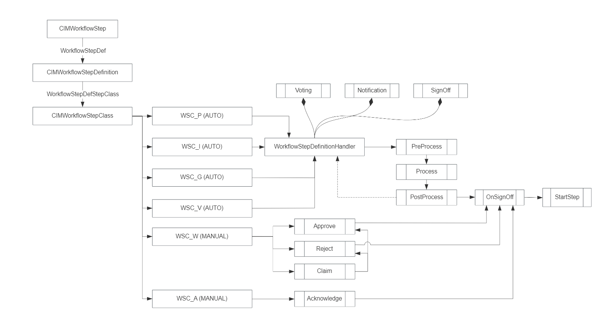

工作流二次开发手册
基于 Vue/Element UI 和 Spring Boot/Spring Cloud & Alibaba 前后端分离的分布式微服务架构
Schema
接口
| uid | name | description | displayName | isActivated | interfaceSequenceNumber | containerId |
|---|---|---|---|---|---|---|
| ICIMWorkflowFlowPart | ICIMWorkflowFlowPart | 流程中实际的流程组块，用于上下流转的 | 流程中实际的流程组块，用于上下流转的 | TRUE | 5005 | CIM.WORKFLOW |
| ICIMWorkflow | ICIMWorkflow | 工作流 | 工作流 | TRUE | 5010 | CIM.WORKFLOW |
| ICIMWorkflowTemplate | ICIMWorkflowTemplate | 工作流模板 | 工作流模板 | TRUE | 5020 | CIM.WORKFLOW |
| ICIMWorkflowObject | ICIMWorkflowObject | 工作流实例 | 工作流实例 | TRUE | 5030 | CIM.WORKFLOW |
| ICIMWorkflowCondition | ICIMWorkflowCondition | 工作流条件 | 工作流条件 | TRUE | 5040 | CIM.WORKFLOW |
| ICIMWorkflowNotificationType | ICIMWorkflowNotificationType | 工作流提醒类型 | 工作流提醒类型 | TRUE | 5050 | CIM.WORKFLOW |
| ICIMWorkflowItem | ICIMWorkflowItem | 工作项 | 工作项 | TRUE | 5060 | CIM.WORKFLOW |
| ICIMWorkflowStep | ICIMWorkflowStep | 工作流步骤 | 工作流步骤 | TRUE | 5070 | CIM.WORKFLOW |
| ICIMWorkflowStepTemplate | ICIMWorkflowStepTemplate | 工作流模板步骤 | 工作流模板步骤 | TRUE | 5080 | CIM.WORKFLOW |
| ICIMWorkflowStepObject | ICIMWorkflowStepObject | 工作流步骤实例 | 工作流步骤实例 | TRUE | 5090 | CIM.WORKFLOW |
| ICIMWorkflowStepClass | ICIMWorkflowStepClass | 工作流步骤分类 | 工作流步骤分类 | TRUE | 5100 | CIM.WORKFLOW |
| ICIMWorkflowStepDefinition | ICIMWorkflowStepDefinition | 工作流步骤定义 | 工作流步骤定义 | TRUE | 5110 | CIM.WORKFLOW |
| ICIMWorkflowStepStatus | ICIMWorkflowStepStatus | 工作流步骤状态 | 工作流步骤状态 | TRUE | 5120 | CIM.WORKFLOW |
| ICIMWorkflowStepCheckList | ICIMWorkflowStepCheckList | 工作流步骤检查列表 | 工作流步骤检查列表 | TRUE | 5130 | CIM.WORKFLOW |
| ICIMWorkflowStepCheckListObject | ICIMWorkflowStepCheckListObject | 工作流步骤检查列表实例 | 工作流步骤检查列表实例 | TRUE | 5140 | CIM.WORKFLOW |
| ICIMWorkflowStepCheckListTemplate | ICIMWorkflowStepCheckListTemplate | 工作流步骤检查列表模板 | 工作流步骤检查列表模板 | TRUE | 5150 | CIM.WORKFLOW |
| ICIMWorkflowStepCheckListItem | ICIMWorkflowStepCheckListItem | 工作流步骤检查项 | 工作流步骤检查项 | TRUE | 5160 | CIM.WORKFLOW |
| ICIMWorkflowStepParticipant | ICIMWorkflowStepParticipant | 工作流步骤参与者 | 工作流步骤参与者 | TRUE | 5170 | CIM.WORKFLOW |
| ICIMWorkflowMethod | ICIMWorkflowMethod | 工作流步骤方法 | 工作流步骤方法 | TRUE | 5180 | CIM.WORKFLOW |
| ICIMWorkflowInbox | ICIMWorkflowInbox | 工作流收件箱 | 工作流收件箱 | TRUE | 5190 | CIM.WORKFLOW |
| ICIMWorkflowInboxMessage | ICIMWorkflowInboxMessage | 工作流收件箱信息 | 工作流收件箱信息 | TRUE | 5200 | CIM.WORKFLOW |
| ICIMWorkflowStepLegend | ICIMWorkflowStepLegend | 工作流步骤图例 | 工作流步骤图例 | TRUE | 5210 | CIM.WORKFLOW |
| ICIMWorkflowCategory | ICIMWorkflowCategory | 工作流分类 | 工作流分类 | TRUE | 5220 | CIM.WORKFLOW |
| ICIMWorkflowStepContinuesStepRel | ICIMWorkflowStepContinuesStepRel | 工作流步骤的关系 | 工作流步骤的关系 | TRUE | 5230 | CIM.WORKFLOW |
| ICIMWorkflowStepGroupRecipient | ICIMWorkflowStepGroupRecipient | 组心态流程参与者 | 组心态流程参与者 | TRUE | 5240 | CIM.WORKFLOW |
| ICIMWorkflowStepRecipient | ICIMWorkflowStepRecipient | 步骤参与人代理 | 步骤参与人代理 | TRUE | 5500 | CIM.WORKFLOW |
枚举
| uid | name | description | displayName | ver | interfaceSequenceNumber | containerId |
|---|---|---|---|---|---|---|
| ELT_WorkflowStatus | WorkflowStatus | 工作流状态 | 工作流状态 | CIM.WORKFLOW | 3000 | TRUE |
| ELT_Ready_WorkflowStatus | Ready | 准备 | 准备 | CIM.WORKFLOW | 3010 | TRUE |
| ELT_Working_WorkflowStatus | Working | 流程中 | 流程中 | CIM.WORKFLOW | 3020 | TRUE |
| ELT_Completed_WorkflowStatus | Completed | 完成 | 完成 | CIM.WORKFLOW | 3030 | TRUE |
| ELT_Error_WorkflowStatus | Error | 错误 | 错误 | CIM.WORKFLOW | 3040 | TRUE |
| ELT_NotificationType | NotificationType | 提醒类型 | 提醒类型 | CIM.WORKFLOW | 4000 | TRUE |
| ELT_All_NotificationType | All | 所有类型 | 所有类型 | CIM.WORKFLOW | 4001 | TRUE |
| ELT_E-mail_NotificationType | 邮件 | 邮件 | CIM.WORKFLOW | 4002 | TRUE | |
| ELT_Message_NotificationType | Message | 短信通知 | 短信通知 | CIM.WORKFLOW | 4003 | TRUE |
| ELT_Mail_NotificationType | 站内信 | 站内信 | CIM.WORKFLOW | 4004 | TRUE | |
| ELT_WorkflowStepStatus | WorkflowStepStatus | 工作流步骤状态 | 工作流步骤状态 | CIM.WORKFLOW | 5000 | TRUE |
| ELT_UnReady_WorkflowStepStatus | UnReady | 未准备 | 未准备 | CIM.WORKFLOW | 5001 | TRUE |
| ELT_Ready_WorkflowStepStatus | Ready | 处理中 | 处理中 | CIM.WORKFLOW | 5002 | TRUE |
| ELT_Reject_WorkflowStepStatus | Reject | 驳回 | 驳回 | CIM.WORKFLOW | 5003 | TRUE |
| ELT_Pass_WorkflowStepStatus | Pass | 通过 | 通过 | CIM.WORKFLOW | 5004 | TRUE |
| ELT_Skip_WorkflowStepStatus | Skip | 跳过（系统自动处理） | 跳过（系统自动处理） | CIM.WORKFLOW | 5005 | TRUE |
| ELT_WorkflowImportance | WorkflowImportance | 流程等级 | 流程等级 | CIM.WORKFLOW | 5100 | TRUE |
| ELT_General_WorkflowImportance | General | 一般 | 一般 | CIM.WORKFLOW | 5101 | TRUE |
| ELT_Important_WorkflowImportance | Important | 重要 | 重要 | CIM.WORKFLOW | 5102 | TRUE |
| ELT_Urgent_WorkflowImportance | Urgent | 紧急 | 紧急 | CIM.WORKFLOW | 5103 | TRUE |
| ELT_WorkflowStepOperationMode | WorkflowStepOperationMode | 步骤认领模式 | 步骤认领模式 | CIM.WORKFLOW | 5200 | TRUE |
| ELT_oneUserPerRole_WorkflowStepOperationMode | oneUserPerRole | 每个角色仅需一人处理，多个角色存在则必须多个角色都需要处理 | 每个角色仅需一人处理 | CIM.WORKFLOW | 5201 | TRUE |
| ELT_anyoneUser_WorkflowStepOperationMode | anyoneUser | 任意一个人处理即可 | 任意一个人处理即可 | CIM.WORKFLOW | 5202 | TRUE |
| ELT_oneUserPerGroup_WorkflowStepOperationMode | oneUserPerGroup | 每个分组仅需一人处理，多个组存在则必须多个组都需要处理 | 每个分组仅需一人处理 | CIM.WORKFLOW | 5203 | TRUE |
| ELT_allUsers_WorkflowStepOperationMode | allUsers | 所有人都必须处理 | 任意一个人处理即可 | CIM.WORKFLOW | 5204 | TRUE |
| ELT_StepClassOperationMode | StepClassOperationMode | 步骤类型的处理方式 | 步骤类型的处理方式 | CIM.WORKFLOW | 5300 | TRUE |
| ELT_Manually_StepClassOperationMode | Manually | 人工处理 | 人工处理 | CIM.WORKFLOW | 5301 | TRUE |
| ELT_Automatically_StepClassOperationMode | Automatically | 自动处理 | 自动处理 | CIM.WORKFLOW | 5302 | TRUE |
属性
| uid | name | description | displayName | isActivated | propertyValueType | propertyValueTypeDetails | isMandatory | isDbField | HistoryRetained | fieldLength | exposedInterfaceDefUid | containerId |
|---|---|---|---|---|---|---|---|---|---|---|---|---|
| WorkflowStepDuration | WorkflowStepDuration | 计划持续时间 | 计划持续时间 | TRUE | Integer | FALSE | TRUE | FALSE | ICIMWorkflowStep | CIM.WORKFLOW | ||
| WorkflowStepWarningTime | WorkflowStepWarningTime | 预警时间 | 预警时间 | TRUE | Double | FALSE | TRUE | FALSE | ICIMWorkflowStep | CIM.WORKFLOW | ||
| WorkflowStepPrincipalPrescription | WorkflowStepPrincipalPrescription | 委托人权限时效 | 委托人权限时效 | TRUE | Double | FALSE | TRUE | FALSE | ICIMWorkflowStep | CIM.WORKFLOW | ||
| WorkflowStepOperationMode | WorkflowStepOperationMode | 步骤处理模式 | 步骤处理模式 | TRUE | EnumList | ELT_WorkflowStepOperationMode | FALSE | TRUE | FALSE | ICIMWorkflowStep | CIM.WORKFLOW | |
| WorkflowProportion | WorkflowProportion | 步骤权重 | 委托人权限时效 | TRUE | Double | FALSE | TRUE | FALSE | ICIMWorkflowStep | CIM.WORKFLOW | ||
| WorkflowStepRemark | WorkflowStepRemark | 备注说明 | 步骤处理模式 | TRUE | String | FALSE | TRUE | FALSE | 256 | ICIMWorkflowStep | CIM.WORKFLOW | |
| WorkflowStepStartDate | WorkflowStepStartDate | 开始日期 | 开始日期 | TRUE | DateTime | FALSE | TRUE | FALSE | ICIMWorkflowStepObject | CIM.WORKFLOW | ||
| WorkflowStepEndDate | WorkflowStepEndDate | 结束日期 | 结束日期 | TRUE | DateTime | FALSE | TRUE | FALSE | ICIMWorkflowStepObject | CIM.WORKFLOW | ||
| WorkflowStepActualDuration | WorkflowStepActualDuration | 实际持续时间 | 实际持续时间 | TRUE | Double | FALSE | TRUE | FALSE | ICIMWorkflowStepObject | CIM.WORKFLOW | ||
| WorkflowStepStatus | WorkflowStepStatus | 状态 | 状态 | TRUE | EnumList | ELT_WorkflowStepStatus | FALSE | TRUE | FALSE | 64 | ICIMWorkflowStepObject | CIM.WORKFLOW |
| WorkflowStepDefProcessHandler | WorkflowStepDefProcessHandler | 处理器 | 处理器 | TRUE | String | TRUE | TRUE | FALSE | ICIMWorkflowStepDefinition | CIM.WORKFLOW | ||
| WorkflowStepDefMaxAllowLine | WorkflowStepDefMaxAllowLine | 步骤定义允许的最大连接线 | 步骤定义允许的最大连接线 | TRUE | Integer | TRUE | TRUE | FALSE | ICIMWorkflowStepDefinition | CIM.WORKFLOW | ||
| WorkflowItemStatus | WorkflowItemStatus | 工作流状态 | 工作流状态 | TRUE | String | FALSE | TRUE | FALSE | 128 | ICIMWorkflowItem | CIM.WORKFLOW | |
| WorkflowItemActiveWorkflowCount | WorkflowItemActiveWorkflowCount | 活动工作流的个数 | 活动工作流的个数 | TRUE | Integer | FALSE | TRUE | FALSE | ICIMWorkflowItem | CIM.WORKFLOW | ||
| WorkflowItemWorkflowTotalCount | WorkflowItemWorkflowTotalCount | 工作流总数 | 工作流总数 | TRUE | Integer | FALSE | TRUE | FALSE | ICIMWorkflowItem | CIM.WORKFLOW | ||
| WorkflowStatus | WorkflowStatus | 状态 | 状态 | TRUE | EnumList | ELT_WorkflowStatus | FALSE | TRUE | FALSE | 64 | ICIMWorkflowObject | CIM.WORKFLOW |
| WorkflowMessage | WorkflowMessage | 过程信息 | 过程信息 | TRUE | String | FALSE | TRUE | FALSE | 1024 | ICIMWorkflowObject | CIM.WORKFLOW | |
| WorkflowRemark | WorkflowRemark | 备注信息 | 备注信息 | TRUE | String | FALSE | TRUE | FALSE | 1024 | ICIMWorkflowObject | CIM.WORKFLOW | |
| WorkflowErrorMsg | WorkflowErrorMsg | 错误信息 | 错误信息 | TRUE | String | FALSE | TRUE | FALSE | 1024 | ICIMWorkflowObject | CIM.WORKFLOW | |
| WorkflowDetailStatus | WorkflowDetailStatus | 详细状态 | 详细状态 | TRUE | String | FALSE | TRUE | FALSE | 1024 | ICIMWorkflowObject | CIM.WORKFLOW | |
| TemplateFrontInfo | TemplateFrontInfo | 前端模板信息 | 前端模板信息 | TRUE | LongText | TRUE | TRUE | FALSE | ICIMWorkflowTemplate | CIM.WORKFLOW | ||
| EffectiveInterface | EffectiveInterface | 生效的接口信息 | 生效的接口信息 | TRUE | String | FALSE | TRUE | FALSE | 512 | ICIMWorkflowTemplate | CIM.WORKFLOW | |
| FrontStepId | FrontStepId | 前端步骤id | 前端步骤id | TRUE | String | TRUE | TRUE | FALSE | 64 | ICIMWorkflowStepTemplate | CIM.WORKFLOW | |
| WorkflowStepMsgFromPreviousStep | WorkflowStepMsgFromPreviousStep | 上一步消息 | 上一步消息 | TRUE | String | FALSE | TRUE | FALSE | 1024 | ICIMWorkflowStepObject | CIM.WORKFLOW | |
| WorkflowStepMsgToNextStep | WorkflowStepMsgToNextStep | 给下一步的消息 | 给下一步的消息 | TRUE | String | FALSE | TRUE | FALSE | 1024 | ICIMWorkflowStepObject | CIM.WORKFLOW | |
| WorkflowStepComments | WorkflowStepComments | 评论 | 评论 | TRUE | RichText | FALSE | TRUE | FALSE | 1024 | ICIMWorkflowStep | CIM.WORKFLOW | |
| WorkflowStepClaimedInd | WorkflowStepClaimedInd | 是否认领 | 是否认领 | TRUE | Boolean | FALSE | TRUE | FALSE | ICIMWorkflowStepObject | CIM.WORKFLOW | ||
| WorkflowStepGroupAssignInd | WorkflowStepGroupAssignInd | 组参与标识 | 组参与标识 | TRUE | String | FALSE | TRUE | FALSE | 64 | ICIMWorkflowStep | CIM.WORKFLOW | |
| WorkflowStepParallelExpansionInd | WorkflowStepParallelExpansionInd | 并行标识 | 并行标识 | TRUE | Boolean | FALSE | TRUE | FALSE | ICIMWorkflowStep | CIM.WORKFLOW | ||
| WorkflowOnHoldInd | WorkflowOnHoldInd | 暂停标识 | 暂停标识 | TRUE | Boolean | FALSE | TRUE | FALSE | ICIMWorkflowObject | CIM.WORKFLOW | ||
| WorkflowRev | WorkflowRev | 工作流版本 | 工作流版本 | TRUE | Integer | FALSE | TRUE | FALSE | ICIMWorkflowObject | CIM.WORKFLOW | ||
| WorkflowImportance | WorkflowImportance | 流程等级 | 流程等级 | TRUE | EnumList | ELT_WorkflowImportance | TRUE | TRUE | FALSE | 64 | ICIMWorkflow | CIM.WORKFLOW |
| WorkflowStepLegendTextColor | WorkflowStepLegendTextColor | 步骤图例的文字颜色 | 步骤图例的文字颜色 | TRUE | String | FALSE | TRUE | FALSE | 64 | ICIMWorkflowStepLegend | CIM.WORKFLOW | |
| WorkflowStepLegendIcon | WorkflowStepLegendIcon | 步骤图例的图标 | 步骤图例的图标 | TRUE | String | FALSE | TRUE | FALSE | 64 | ICIMWorkflowStepLegend | CIM.WORKFLOW | |
| WorkflowStepLegendTitle | WorkflowStepLegendTitle | 步骤图例的标题 | 步骤图例的标题 | TRUE | String | FALSE | TRUE | FALSE | 64 | ICIMWorkflowStepLegend | CIM.WORKFLOW | |
| WorkflowStepLegendBackgroundColor | WorkflowStepLegendBackgroundColor | 步骤图例的背景色 | 步骤图例的背景色 | TRUE | String | FALSE | TRUE | FALSE | 64 | ICIMWorkflowStepLegend | CIM.WORKFLOW | |
| WorkflowStepAcceptPercentage | WorkflowStepAcceptPercentage | 步骤通过百分比 | 步骤通过百分比 | TRUE | Double | FALSE | TRUE | FALSE | ICIMWorkflowStep | CIM.WORKFLOW | ||
| WorkflowStepRejectPercentage | WorkflowStepRejectPercentage | 步骤拒绝百分比 | 步骤拒绝百分比 | TRUE | Double | FALSE | TRUE | FALSE | ICIMWorkflowStep | CIM.WORKFLOW | ||
| WorkflowPercentage | WorkflowPercentage | 工作流完成百分比 | 工作流完成百分比 | TRUE | Integer | FALSE | TRUE | FALSE | ICIMWorkflowObject | CIM.WORKFLOW | ||
| End1WorkflowObjectStepStatus | End1WorkflowObjectStepStatus | 工作流步骤处理状态 | 工作流步骤处理状态 | TRUE | EnumList | ELT_WorkflowStepStatus | FALSE | TRUE | FALSE | ICIMWorkflowStepContinuesStepRel | CIM.WORKFLOW | |
| WorkflowStepParallelMode | WorkflowStepParallelMode | 并行步骤的模式 | 并行步骤的模式 | TRUE | String | FALSE | TRUE | FALSE | 128 | ICIMWorkflowStep | CIM.WORKFLOW | |
| WorkflowStepOnHoldInd | WorkflowStepOnHoldInd | 工作步骤挂起标识 | 工作步骤挂起标识 | TRUE | Boolean | FALSE | TRUE | FALSE | ICIMWorkflowStepObject | CIM.WORKFLOW | ||
| WorkflowRecipientGroupInd | WorkflowRecipientGroupInd | 参与人组标识 | 参与人组标识 | TRUE | String | FALSE | TRUE | FALSE | 256 | ICIMWorkflowStepRecipient | CIM.WORKFLOW | |
| WorkflowRecipientEffectParticipantInfo | WorkflowRecipientEffectParticipantInfo | 当前生效的参与人信息 | 当前生效的参与人信息 | TRUE | String | FALSE | TRUE | FALSE | 512 | ICIMWorkflowStepRecipient | CIM.WORKFLOW | |
| WorkflowStepCurrentParticipantInfo | WorkflowStepCurrentParticipantInfo | 流程步骤当前的参与人信息 | 流程步骤当前的参与人信息 | TRUE | String | FALSE | TRUE | FALSE | 128 | ICIMWorkflowStepObject | CIM.WORKFLOW | |
| WorkflowPartGroupInd | WorkflowPartGroupInd | 流程块所属组信息 | 流程块所属组信息 | TRUE | String | FALSE | TRUE | FALSE | 256 | ICIMWorkflowFlowPart | CIM.WORKFLOW | |
| StepClassExecutionMode | StepClassExecutionMode | 步骤定义的执行方式 | 步骤定义的执行方式 | TRUE | EnumList | ELT_StepClassOperationMode | FALSE | TRUE | FALSE | 128 | ICIMWorkflowStepClass | CIM.WORKFLOW |
关联关系
| uid | name | description | displayName | isActivated | tableName | cachedInfo | interfaceDefUid1 | interfaceDefUid2 | min1 | min2 | max1 | max2 | displayName1 | displayName2 | optionalInterfaces | delete1To2 | delete2To1 |
|---|---|---|---|---|---|---|---|---|---|---|---|---|---|---|---|---|---|
| WorkflowNotificationType | WorkflowNotificationType | 通知类型 | 通知类型 | TRUE | cim_rel_wft | Not | ICIMWorkflow | ICIMWorkflowNotificationType | 0 | 0 | * | 1 | 工作流模板 | 工作流提醒类型 | |||
| WorkflowConditionCompositions | WorkflowConditionCompositions | 模板条件 | 模板条件 | TRUE | cim_rel_wft | Not | ICIMWorkflowCondition | ICIMConditionComposition | 0 | 0 | 1 | * | 工作流条件 | 工作流模板 | |||
| WorkflowSteps | WorkflowSteps | 模板步骤 | 模板步骤 | TRUE | cim_rel_wfs | Not | ICIMWorkflow | ICIMWorkflowFlowPart | 0 | 0 | 1 | * | 工作流 | 流程块 | TRUE | ||
| WorkflowStepChecklist | WorkflowStepChecklist | 步骤检查列表 | 步骤检查列表 | TRUE | cim_rel_wfs_check | Not | ICIMWorkflowStep | ICIMWorkflowStepCheckList | 0 | 0 | * | 1 | 工作流步骤 | 工作流检查列表 | |||
| WorkflowStepChecklistItems | WorkflowStepChecklistItems | 检查具体项 | 检查具体项 | TRUE | cim_rel_wfs_check | Not | ICIMWorkflowStepCheckList | ICIMWorkflowStepCheckListItem | 0 | 0 | 1 | * | 检查事项 | 具体事项条目 | TRUE | ||
| WorkflowStepStepRecipients | WorkflowStepStepRecipients | 步骤参与人 | 步骤参与人 | TRUE | cim_rel_wfs_recipient | Not | ICIMWorkflowStep | ICIMWorkflowStepRecipient | 0 | 0 | 1 | * | 工作流步骤 | 工作流步骤接受者 | TRUE | ||
| WorkflowStepStepDef | WorkflowStepStepDef | 步骤使用的定义 | 步骤使用的定义 | TRUE | cim_rel_wfs | Not | ICIMWorkflowStep | ICIMWorkflowStepDefinition | 0 | 0 | * | 1 | 工作流步骤 | 步骤定义 | |||
| WorkflowStepDefStepClass | WorkflowStepDefStepClass | 步骤类型 | 步骤类型 | TRUE | cim_rel_wfs_def_class | Not | ICIMWorkflowStepDefinition | ICIMWorkflowStepClass | 0 | 0 | 1 | * | 步骤定义 | 步骤类型 | |||
| WorkflowStepSuccessStep | WorkflowStepSuccessStep | 同意步骤 | 同意步骤 | TRUE | cim_rel_wfs | Not | ICIMWorkflowFlowPart | ICIMWorkflowFlowPart | 0 | 0 | * | * | 工作流步骤 | 工作流步骤 | |||
| WorkflowStepFailureStep | WorkflowStepFailureStep | 拒绝步骤 | 拒绝步骤 | TRUE | cim_rel_wfs | Not | ICIMWorkflowFlowPart | ICIMWorkflowFlowPart | 0 | 0 | * | * | 工作流步骤 | 工作流步骤 | |||
| WorkflowStepSuccessStatus | WorkflowStepSuccessStatus | 步骤执行成功状态 | 步骤执行成功状态 | TRUE | cim_rel_wfs_status | Not | ICIMWorkflowStep | ICIMWorkflowStepStatus | 0 | 0 | * | 1 | 工作流步骤 | 步骤状态 | |||
| WorkflowStepFailureStatus | WorkflowStepFailureStatus | 步骤执行失败状态 | 步骤执行失败状态 | TRUE | cim_rel_wfs_status | Not | ICIMWorkflowStep | ICIMWorkflowStepStatus | 0 | 0 | * | 1 | 工作流步骤 | 步骤状态 | |||
| WorkflowWorkflowTemplate | WorkflowWorkflowTemplate | 工作流实例依托的模板 | 工作流实例依托的模板 | TRUE | cim_rel_obj_wf | Not | ICIMWorkflowObject | ICIMWorkflowTemplate | 0 | 1 | * | 1 | 工作流实例 | 工作流模板 | |||
| WorkflowFirstStep | WorkflowFirstStep | 第一个步骤 | 第一个步骤 | TRUE | cim_rel_wf | Not | ICIMWorkflow | ICIMWorkflowFlowPart | 0 | 0 | 1 | 1 | 工作流 | 工作流步骤 | |||
| WorkflowStepDefMethod | WorkflowStepDefMethod | 步骤定义方法 | 步骤定义方法 | TRUE | cim_rel_wfs_def_method | Not | ICIMWorkflowStepDefinition | ICIMWorkflowMethod | 0 | 0 | 1 | * | 步骤定义 | 方法 | |||
| WorkflowItemWorkflow | WorkflowItemWorkflow | 工作项获取工作流对象 | 工作项获取工作流对象 | TRUE | cim_rel_wf_item | Not | ICIMWorkflowItem | ICIMWorkflowObject | 0 | 0 | 1 | * | 工作项 | 工作流实例 | TRUE | ||
| WorkflowStepExpandedParallelStep | WorkflowStepExpandedParallelStep | 工作流步骤实例并行步骤 | 工作流步骤实例并行步骤 | TRUE | cim_rel_obj_wfs | Not | ICIMWorkflowStepObject | ICIMWorkflowStepObject | 0 | 0 | 1 | * | 工作流步骤实例 | 工作流步骤实例 | |||
| WorkflowStepCompletedBy | WorkflowStepCompletedBy | 工作流步骤完成者 | 工作流步骤完成者 | TRUE | cim_rel_obj_wfs | Not | ICIMWorkflowStepObject | ICIMUser | 0 | 0 | 1 | 1 | 工作流步骤实例 | 用户 | |||
| WorkflowStepOriginalStepRecipient | WorkflowStepOriginalStepRecipient | 工作流步骤原来接收者 | 工作流步骤原来接收者 | TRUE | cim_rel_obj_wfs | Not | ICIMWorkflowStepObject | ICIMWorkflowStepRecipient | 0 | 0 | 1 | * | 工作流步骤 | 工作流步骤接受者 | |||
| WorkflowDefaultSubmitter | WorkflowDefaultSubmitter | 工作流提交者 | 工作流提交者 | TRUE | cim_rel_obj_wf | Not | ICIMWorkflow | ICIMUser | 0 | 0 | 1 | 1 | 工作流 | 用户 | |||
| WorkflowStepEarlyWarningMode | WorkflowStepEarlyWarningMode | 工作步骤超时预警方式 | 工作步骤超时预警方式 | TRUE | cim_rel_wfs | Not | ICIMWorkflowStep | ICIMWorkflowNotificationType | 0 | 0 | 1 | 1 | 工作流步骤 | 提醒类型 | |||
| WorkflowStepOvertimePrincipal | WorkflowStepOvertimePrincipal | 步骤超时委托人 | 步骤超时委托人 | TRUE | cim_rel_wfs | Not | ICIMWorkflowStep | ICIMUser | 0 | 0 | * | 1 | 工作流步骤 | 临时委托人 | |||
| WorkflowStepContinuesStep | WorkflowStepContinuesStep | 实际运转的上下游步骤 | 实际运转的上下游步骤 | TRUE | cim_rel_obj_wfs | Not | ICIMWorkflowStepObject | ICIMWorkflowStepObject | 0 | 0 | * | * | 工作流步骤 | 工作流步骤 | ICIMWorkflowStepContinuesStepRel | ||
| WorkflowCategory | WorkflowCategory | 工作流分类 | 工作流分类 | TRUE | cim_rel_wft | Not | ICIMWorkflow | ICIMWorkflowCategory | 0 | 0 | * | 1 | 工作流 | 工作流程分类 | |||
| WorkflowReassignToParticipant | WorkflowReassignToParticipant | 默认的重新分配的参与人 | 默认的重新分配的参与人 | TRUE | cim_rel_wft | Not | ICIMWorkflow | ICIMParticipant | 0 | 1 | * | 1 | 工作流 | 步骤参与者 | |||
| WorkflowObjectContinues | WorkflowObjectContinues | 工作流实例接续的工作流实例 | 工作流实例接续的工作流实例 | TRUE | cim_rel_obj_wf | Not | ICIMWorkflowFlowPart | ICIMWorkflowFlowPart | 0 | 0 | 1 | * | 工作流 | 工作流 | |||
| WorkflowStepOriginalOvertimePrincipals | WorkflowStepOriginalOvertimePrincipals | 原始的临时委托人 | 原始的临时委托人 | TRUE | cim_rel_obj_wfs | Not | ICIMWorkflowStep | ICIMUser | 0 | 0 | * | * | 工作流步骤 | 临时委托人 | |||
| WorkflowStepGroupRecipient2Participants | WorkflowStepGroupRecipient2Participants | 组参与人和具体的参与人 | 组参与人和具体的参与人 | TRUE | cim_rel_wfs | Not | ICIMWorkflowStepGroupRecipient | ICIMParticipant | 0 | 0 | * | * | 工作流步骤接受者 | 工作流步骤接受者 | |||
| WorkflowStepObjectInstantiatedBy | WorkflowStepObjectInstantiatedBy | 根据模板实例化 | 根据模板实例化 | TRUE | cim_rel_obj_wfs | Not | ICIMWorkflowStepObject | ICIMWorkflowStepTemplate | 0 | 1 | * | 1 | 工作流步骤 | 步骤模板 | |||
| WorkflowStepRecipientHistoryParticipants | WorkflowStepRecipientHistoryParticipants | 参与人的链接关系 | 参与人的链接关系 | TRUE | cim_rel_wfs_participant | Not | ICIMWorkflowStepRecipient | ICIMWorkflowStepRecipient | 0 | 1 | * | 1 | 工作流步骤接受者 | 工作流步骤接受者 | |||
| WorkflowStepRecipientParticipants | WorkflowStepRecipientParticipants | 接受者对应的参与者 | 接受者对应的参与者 | TRUE | cim_rel_wfs_participant | Not | ICIMWorkflowStepRecipient | ICIMParticipant | 0 | 1 | * | 1 | 工作流步骤接受者 | 工作流步骤接受者 |
类型
| uid | name | description | displayName | isConfigControlled | uidPattern | uniqueKeyPattern | containerId | tableName | cachedInfo | isActivated |
|---|---|---|---|---|---|---|---|---|---|---|
| CIMWorkflow | CIMWorkflow | 工作流 | 工作流 | TRUE | CIM.SCHEMA | cim_wf | Not | TRUE | ||
| CIMWorkflowTemplate | CIMWorkflowTemplate | 工作流模板 | 工作流模板 | TRUE | CIM.SCHEMA | cim_wf_template | Redis | TRUE | ||
| CIMWorkflowStep | CIMWorkflowStep | 工作流步骤 | 工作流步骤 | TRUE | CIM.SCHEMA | cim_wfs | Not | TRUE | ||
| CIMWorkflowStepTemplate | CIMWorkflowStepTemplate | 工作流步骤模板 | 工作流步骤模板 | TRUE | CIM.SCHEMA | cim_wfs_template | Redis | TRUE | ||
| CIMWorkflowNotificationType | CIMWorkflowNotificationType | 工作流提醒类型 | 工作流提醒类型 | TRUE | WFNT,name | CIM.SCHEMA | cim_wf_notification_type | Redis | TRUE | |
| CIMWorkflowStepCheckList | CIMWorkflowStepCheckList | 工作流检查列表 | 工作流检查列表 | TRUE | CIM.SCHEMA | cim_wf_checkList | Not | TRUE | ||
| CIMWorkflowStepCheckListTemplate | CIMWorkflowStepCheckListTemplate | 工作流检查列表模板 | 工作流检查列表模板 | TRUE | WFSCHSLT,name | CIM.SCHEMA | cim_wf_checkList_template | Not | TRUE | |
| CIMWorkflowStepCheckListItem | CIMWorkflowStepCheckListItem | 工作流检查列表项 | 工作流检查列表项 | TRUE | CIM.SCHEMA | cim_wf_checkList_item | Not | TRUE | ||
| CIMWorkflowCondition | CIMWorkflowCondition | 工作流条件 | 工作流条件 | TRUE | WFCOND,name | CIM.SCHEMA | cim_wf_condition | Not | TRUE | |
| CIMWorkflowStepDefinition | CIMWorkflowStepDefinition | 工作流步骤定义 | 工作流步骤定义 | TRUE | WSD,name | CIM.SCHEMA | cim_wfs_def | Not | TRUE | |
| CIMWorkflowStepClass | CIMWorkflowStepClass | 工作流步骤分类 | 工作流步骤分类 | TRUE | WSC,name | CIM.SCHEMA | cim_wfs_class | Not | TRUE | |
| CIMWorkflowStepStatus | CIMWorkflowStepStatus | 工作流步骤状态 | 工作流步骤状态 | TRUE | WSS,name | CIM.SCHEMA | cim_wfs_status | Redis | TRUE | |
| CIMWorkflowStepRecipient | CIMWorkflowStepRecipient | 步骤接受者 | 步骤接受者 | TRUE | CIM.SCHEMA | cim_wfs_recipient | Redis | TRUE | ||
| CIMWorkflowCategory | CIMWorkflowCategory | 流程分类 | 流程分类 | TRUE | CIMLevel,name,CIMParentUid | CIM.SCHEMA | cim_wf_category | Redis | TRUE |
步骤类型
| uid | name | description | displayName | containerId |
|---|---|---|---|---|
| WSC_P | P | auto-process step | 自动处理 | CIM.WORKFLOW |
| WSC_I | I | notification step | 信息通知 | CIM.WORKFLOW |
| WSC_W | W | work step | 人工处理 | CIM.WORKFLOW |
步骤状态
| uid | name | description | displayName | containerId |
|---|---|---|---|---|
| WSS_C | C | 完成 | 完成 | CIM.WORKFLOW |
| WSS_RS | RS | 准备就绪 | 准备就绪 | CIM.WORKFLOW |
| WSS_SignOff | SignOff | 已签署 | 已签署 | CIM.WORKFLOW |
| WSS_RJ | RJ | 驳回 | 驳回 | CIM.WORKFLOW |
ProcessStep的调用
在这一部分，我们将指导您如何进行工作流引擎的ProcessStep二次开发操作，
可以通过ICIMWorkflowStepDefinition接口的以下属性，来运行自定义Handler
| 接口 | 属性 | 描述 |
|---|---|---|
| ICIMWorkflowStepDefinition | CIMWorkStepDefinitionPostHandler | 后处理Hander |
| ICIMWorkflowStepDefinition | CIMWorkStepDefinitionPreHandler | 预处理 Handler |
| ICIMWorkflowStepDefinition | CIMWorkStepAutoCommitAfterHandler | 自动异步处理Handler |
步骤流转示意图：

自定义Handler示例：
x1package com.imc.modules.workflow.procesStepHandler;2
3import com.imc.framework.collections.impl.ObjectCollection;4import com.imc.framework.handlers.wf.impl.WorkflowProcessStepHandlerBase;5import com.imc.modules.workflow.args.ProcessStepArgs;6import com.imc.modules.workflow.enums.WorkflowStepStatus;7import com.imc.schema.interfaces.ICIMWorkflowStep;8import com.imc.schema.interfaces.ICIMWorkflowStepObject;9import com.imc.schema.interfaces.IObject;10import org.springframework.stereotype.Service;11
12import java.util.List;13
14public class Processhandler extends WorkflowProcessStepHandlerBase {16 17 public String getHandlerId() {18 return "Processhandler";19 }20 21 public boolean isSupported(String s){22 return s.equals(getHandlerId());23 }24
25 26 public ObjectCollection execute(ObjectCollection objectCollection, IObject pobjStep, Object o) {27 try {28 ProcessStepArgs processStepArgs = (ProcessStepArgs)o;29 ICIMWorkflowStep lobjISPFWorkflowStep = pobjStep.toInterface(ICIMWorkflowStepObject.class).toInterface(ICIMWorkflowStep.class);30 Integer lintAcceptPercentage = lobjISPFWorkflowStep.getStepAcceptPercentage();31 if (lintAcceptPercentage == 0) {32 lintAcceptPercentage = 100;33 }34 double ldblAcceptPercentage = (double) lintAcceptPercentage / 100.0;35 List<ICIMWorkflowStep> lobjPreviousSteps = lobjISPFWorkflowStep.getPreviousDependentSuccessfulSteps();36 int lintApprovedSteps = 0;37 int lintTotalSteps = 0;38 if (lobjPreviousSteps!=null) {39 for (ICIMWorkflowStep stepObject : lobjPreviousSteps) {40 ICIMWorkflowStepObject lobjICIMWorkflowStepObject = stepObject.toInterface(ICIMWorkflowStepObject.class);41 if (lobjICIMWorkflowStepObject.getStepClaimedInd())//(lobjICIMWorkflowStepObject.getStepComments() == null )//|| lobjICIMWorkflowStepObject.getStepComments().IndexOf(SPFResources.get_GetDisplayAs(11001L)) < 0)42 {43 lintTotalSteps++;44 if (lobjICIMWorkflowStepObject.getStepStatus().equals(WorkflowStepStatus.ELT_Pass_WorkflowStepStatus.name())) {45 lintApprovedSteps++;46 }47 }48 }49 }50 double ldblActualPercent = (double) lintApprovedSteps / (double) lintTotalSteps;51 if (ldblActualPercent == 0.0) {52 processStepArgs.setRejectStep(true);53 } else if (ldblActualPercent < ldblAcceptPercentage) {54 processStepArgs.setRejectStep(true);55 }56 } catch (Exception e) {57 throw new RuntimeException(e);58 }59 return null;60 }61}